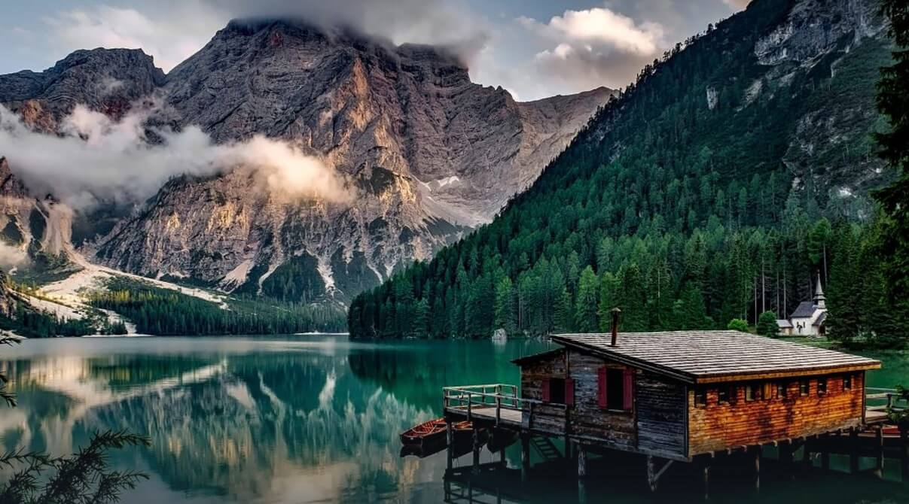

Explore fronm 900 tour packages in pakistan and abroad
find on a location such as dubai, turkey, naran and hunza etc.


Balochistan is wealthy in exhaustible and renewable resources; it is the second major provider of natural gas in Pakistan. But No one knows it’s a great place with respect to tourism and has untouched beauties there to explore….. It is a magical Place One Must Visit ….. Balochistan- the land of beauty is one of the four provinces of Pakistan. It is the largest province in terms of land area, forming the southwestern region of the country, but is the least populated. Its provincial capital and largest city is Quetta. If one wants to explore the land, he will have a chance to explore the different aspects of the province. Balochistan is laden with a vast majority of historical, archaeological and very beautiful spell bound beautiful natural places. The beaches of Balochistan one cannot resist which add the beauty to the tour, if one really wants to explore this majestic province.
Khyber Pakhtunkhwa – Land of the Valiant Pakhtuns nestled primarily on the Iranian Plateau, holds a significant strategic place in the country’s geographical setting. The famous Khyber Pass links the province to Afghanistan sharing borders in the west and north, Azad Kashmir and the Northern Areas (the Pakistani-administered areas of the Kashmir region) to the east and northeast, Punjab province to the southeast, and Baluchistan province to the southwest. On the western boundary, along the Afghan border, lie the erstwhile federally administered tribal areas (FATA) which were recently integrated with and merged into Khyber Pakhtunkhwa under the 25th Constitutional Amendment transferring all executive authority to Chief Minister KP and his cabinet. Sloping down from the breathtaking beauty of the Hindu Kush to the sun baked plains of the Derajat, the province can be divided into two zones based on its diverse geography. The northern zone with its surreal landscape cladded with snowy peaks and lush green pastures supports a cold climate with heavy rainfall and pleasant summers with the exception of Peshawar basin, which tends to be hot in summer and cold in winter with moderate rainfall. While the southern end with its contrasting spur of clay and sandstone hills stretching onwards from Peshawar to the Derajat Basin, is arid with hot summers and relatively cold winters and scanty rainfall. The major rivers that criss-cross the province are the Kabul, Swat, Chitral, Kunar, Siran, Panjkora, Bara, Kurram, Dor, Haroo, Gomal and Zhob.
Punjabi Culture is one of the oldest in world history, dating from ancient antiquity to the modern era. The scope, history, complexity and density of the culture are vast. Some of the main areas of the Punjabi culture include: Punjabi cuisine, philosophy, poetry, artistry, music, architecture, traditions and values and history. Some cities of Punjab have more importance for Sikh community from India. The founder of Sikh religion was born in Nankana Sahib, a district of Punjab so Sikh from different parts of world come and visits Punjab. Jahngir tomb and Badshahi Masjid in Lahore are the important places of Pakistan. Data Sahib is very scared place in Punjab and most of the people come and visit Data sahib every year.
Home of the local Sindhis, Sindh is the most distinctive region of Pakistan. Whether it’s the highlights about Sindhi culture, souvenir or the hospitality, this Pakistani province is an ideal place to visit and create unforgettable memories. The reading is a nutshell which is depicting a greater glimpse in a brief way, so let’s explore Sindh like you never did before. History Sindh is the second largest province by population and third largest by area of Pakistan. It is located and also named after the River Sindh (Indus River). The name Hindi or Hindu is also inspired by the name of this province. Sindh had one of the world’s earliest civilizations called Indus Valley Civilization and was a home of Indo-Aryans.